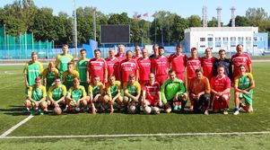
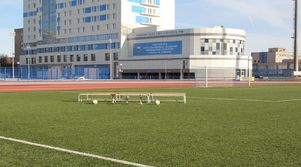
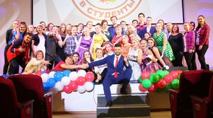
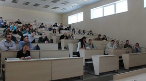
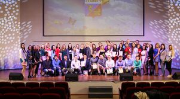

43.03.02 ТуризмСпециальности СГУС
7 направлений подготовки в сфере спорта, туризма, педагогики и работы с молодёжью.

49.03.03 Рекреация и спортивно-оздоровительный туризм
39.03.03 Организация работы с молодёжью
44.03.05 Педагогическое образование с двумя профилями
49.03.04 Спорт